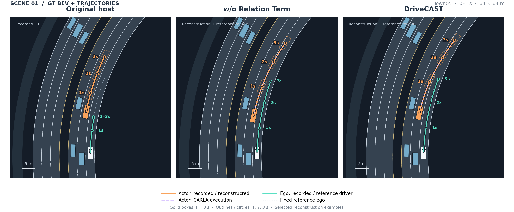
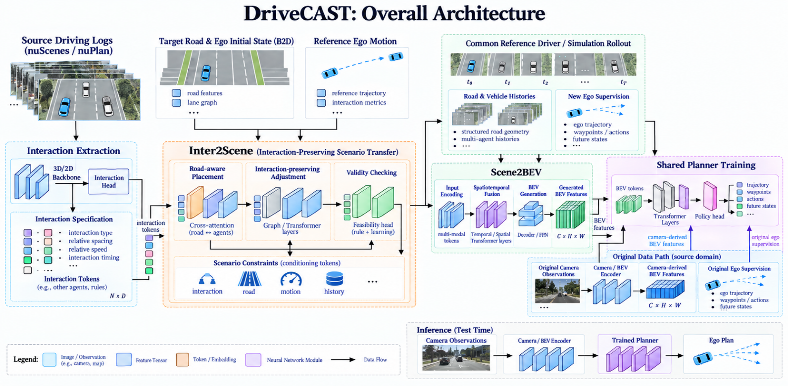
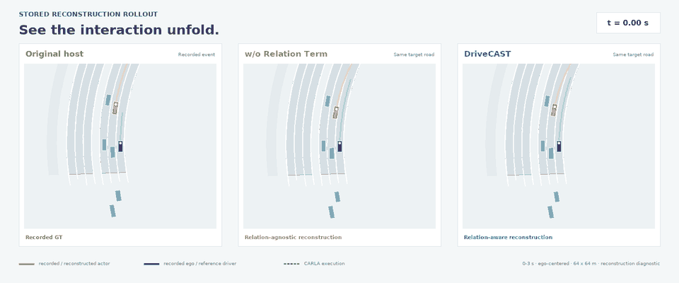
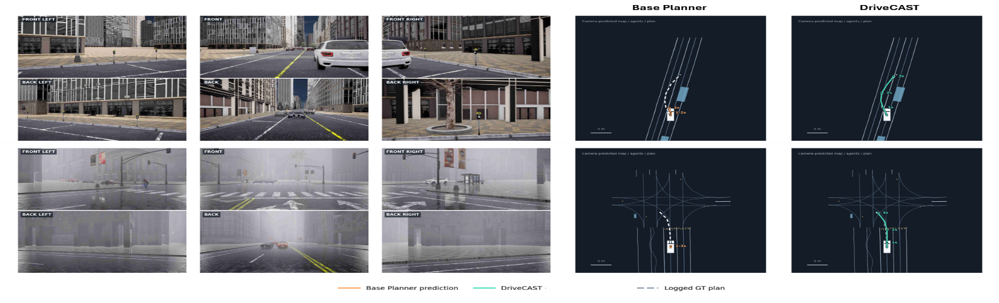

Keep fixed
Target road structure, current ego state, and ego observation history.
Interaction-aware scenario transfer
DriveCAST reconstructs recorded driving events in new road contexts while preserving the relative and temporal conditions that make each interaction meaningful.

Interaction transfer · Original host → w/o Relation Term → DriveCAST View full size ↗01 · Overview
Transferring recorded driving scenarios to new environments does not necessarily preserve interaction conditions, and the original images and ego actions may no longer be suitable for training on the modified scenarios. We propose DriveCAST, an interaction-preserving scenario transfer framework for camera-based planning.
Inter2Scene formulates surrounding-vehicle motion adjustment as constrained matching of selected relative and temporal relations defined with respect to consistently computed reference ego trajectories, while keeping the target road and ego conditions fixed. A common reference driver then generates new ego trajectory targets in simulation. Scene2BEV converts reconstructed scenes into bird’s-eye-view features compatible with camera-derived representations.
These features are used alongside original camera data to train a shared planner, while the image encoder and Scene2BEV remain frozen. This enables learning from transferred experience without rendering camera images for every transferred scene or changing the camera input pathway at inference. We evaluate open- and closed-loop planning through the camera input pathway, with matched external-data volumes and training budgets for comparison with constrained geometric transfer.
The transfer principle
DriveCAST separates the scene context from the interaction conditions and the response used for supervision.
Target road structure, current ego state, and ego observation history.
Selected relative spacing, relative speed, and event timing conditions.
New ego trajectory supervision from a common reference driver in simulation.
02 · Method
Adjusts surrounding-vehicle motion under road, kinematic, and history-continuity constraints to match selected interaction relations.
Executes the reconstructed scenario with a common reference driver and produces new ego supervision.
Maps structured road and vehicle histories to compatible BEV features for shared planner training.

Overall architecture · Figure 2 from the submitted manuscript ↗03 · Qualitative examples
Camera-policy execution on the same CARLA route, with the same weather and traffic seed. Each front-camera video is paired with its own ego-centered BEV on the right.
On this selected route, Base Planner records three collisions with cars; DriveCAST completes the route without a collision. The BEV tracks recorded vehicle positions with ego fixed at the center. Playback is real time; the final frame is held after completion.

Stored GT and CARLA trajectories over 0–3 s, with ego fixed at the center and facing up in each view. This is a reconstruction diagnostic, not a learned-policy prediction.
04 · Results
All driving evaluations retain the original camera input pathway. Generated features are used only during planner training.
DriveCAST and constrained geometric transfer use matched external-data volumes and training budgets.

Camera-input planningBase Planner vs. DriveCAST · two selected scenes from the paper's qualitative comparisonView full size ↗05 · Citation
Author and affiliation information is intentionally omitted during review.
@inproceedings{anonymous_drivecast,
title = {DriveCAST: Interaction-Preserving
Transfer of Driving Scenarios},
author = {Anonymous}
}